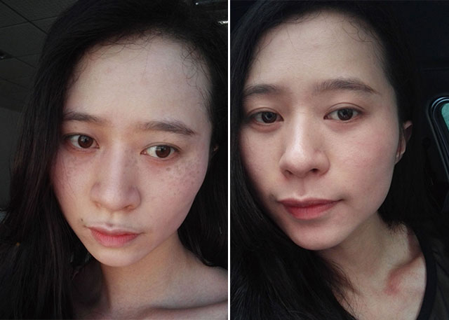
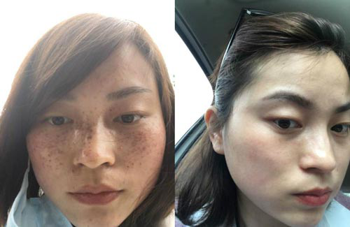

敏君
因为是先天性遗传的雀斑，从十多岁就开始长斑了，十多岁的少女期正是青春时期，但因为脸上的斑伴随着我感觉周围人都是用异样的眼光看我！哪怕出社会来工作了心里都是不是那么的自信，看到其他同事的完美无瑕的脸蛋内心真羡慕。随着年龄的长大斑点越来越严重颜色更深了，，然后到处寻找祛斑方法，毫无例外的全都尝试过。什么白醋洗脸啊，喝柠檬水啊，红糖面膜啊，醋泡鸡蛋啊，喝中汤，抹汤膏，反正是有什么方法都去尝试，几年下来斑点没什么变化，反而弄的皮肤越来越敏感。就在我快要放弃的时候，一次偶然的机会，那是一次公司搞活动的时候，同事介绍苏雨晴老师，说她可以帮助长斑的朋友改善好斑点，大家都说她的祛斑方案不错，我就点开她的朋友圈看了一下，她的微信朋友圈里好多专业的祛斑知识，也有一些祛斑成功的案例讲解。我觉得她真的很专业，说不定可以给我一些帮助，就加了她的微信:
（长按可复制）
她是一个很热心的人，很有耐心地给我讲解祛斑的知识，还告诉她我曾经用过的方法，她告诉我为什么之前的方法没有效果。通过她的讲解我才知道为什么自己的斑一直没有改善好，原来每个人的长斑情况都不同，要根据个人的长斑具体情况进行针对性祛斑，才能真正起到祛斑效果，祛斑一定要分析清楚自己长斑的成因。我相信了她的能力，就把自己的照片发给了她，她看后再详细了解我的长斑过程，给我调配了针对我斑点情况的祛斑方案。刚开始改善一个星期的时候没看到多大的变化我还有些着急，一直到半个月的时候我看到明显的效果，在她的指导下开始了真正见效的祛斑之旅。总共用了雨晴的祛斑方法两个月后就像变了个人似的，过节回老家的时候毫不夸张的说父母都差点没认出来。~！

丽萍
丽萍的斑斑也是有好几年了，特别爱看电视剧，为了追剧，经常熬夜，明知道熬夜长斑，可是就是改不掉这个习惯。而生宝宝后斑点就更严重加深了，也是用了各种祛斑方法也是失败告终直到在一个微信群里遇到了雨晴老师，大家都说她的改善肌肤很在行，我就跟她详聊了起来，原来祛斑也是要根据个人情况分怀孕前和生宝宝后的。就这样在雨晴老师的指导下慢慢的帮我改善，现在我的斑点已经完全改善好了，别提多开心，老公也越来越疼爱我了，哈哈哈。心里充满阳光，我觉得整个世界也变得更美了。最后，我把她的微信号
（长按可复制）
分享给你们，如果你也有斑点的话，可以尝试去咨询她一
|
雨晴老师老师个人微信号是：
|
3-31 18:11

3-31 17:22
3-31 15:33
3-31 12:38
3-31 10:31
3-31 09:23
3-30 09:11
3-31 08:12
3-30 06:58